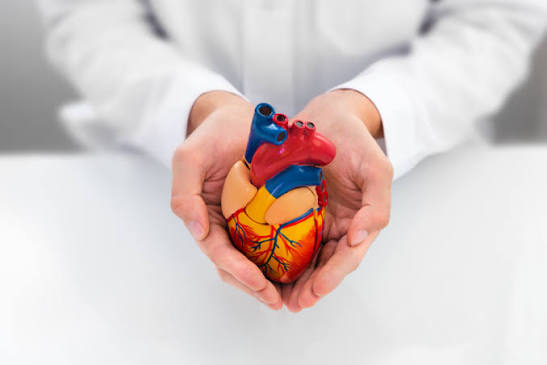

Cardiologia
Diagnóstico, prevenção e tratamento de doenças do coração e do sistema circulatório, com exames avançados e acompanhamento contínuo.

Hospital + Saúde
Cuidado completo e humanizado para você e sua família.
Passe o mouse sobre uma especialidade para ver a imagem.
Voltar para o inícioDiagnóstico, prevenção e tratamento de doenças do coração e do sistema circulatório, com exames avançados e acompanhamento contínuo.

Cuidado integral e humanizado para crianças e adolescentes, do acompanhamento de rotina ao atendimento de urgências pediátricas.
Tratamento de lesões ósseas, articulares e musculares, incluindo reabilitação física e cirurgias de alta complexidade.
Acompanhamento completo da saúde da mulher, de consultas de rotina e pré-natal ao parto humanizado.
Exames de alta precisão, como tomografia, ressonância magnética, ecografia e raio-X, para diagnósticos rápidos e assertivos.